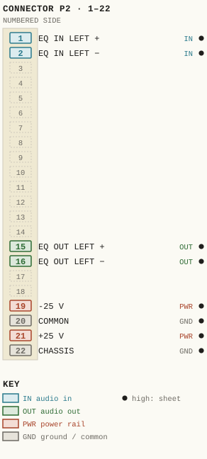
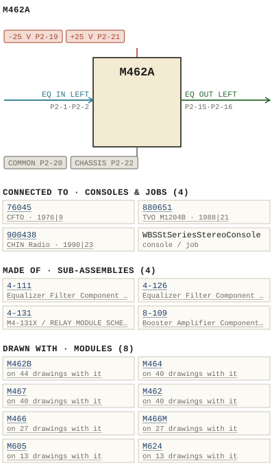

M462A
| Type | module |
| Category | FILTERS |
| Try it | simulator & front panel · download package (zip) |
| Earliest dated evidence | 1976|9 — title block date |
| Evidence | "OCT 76" on 1976 - M462A - DOC - 462-02-002 - EQUALIZER MODULE SCHEMATIC.png |
| Confidence | high |
| All years found | 1976|9, 1978|11, 1988|21, 1990|23, 2005|38 |
| Used in jobs | 76045 (1976|9), 880651 (1988|21), 900438 (1990|23), WBSStSeriesStereoConsole |
| Variants | M462, M462B, M462C |
| Folder | DOCUMENTS/Done/Done - L2042 Console |
| Folder | DOCUMENTS/Internal and Eng Notes and drawings/WBS sales brochures papers |
| Folder | DOCUMENTS/RECENT SCANS/WBSps.ca 20210315 - Large dwg - Needs rename |
Connections and circuit (ideal SPICE model)
Drawn live from its RTO-144 connections: run the generator, turn the gain, watch the VU. Open the netlist to see how the model is built.
Pictures


M462A.pinout.svg

M462A.connections.svg 1976 - DOC - 462-02-002 - EQUALIZER MODULE SCHEMATIC.png
1976 - DOC - 462-02-002 - EQUALIZER MODULE SCHEMATIC.png 1974 - M462A - 3 BAND PROGRAM EQUALIZER 2.jpg
1974 - M462A - 3 BAND PROGRAM EQUALIZER 2.jpg 1974 - M462A - 3 BAND PROGRAM EQUALIZER.jpg
1974 - M462A - 3 BAND PROGRAM EQUALIZER.jpg 1974 - M462A - 462-02-002.jpg
1974 - M462A - 462-02-002.jpg 1974 - M462A - EQ _5667.jpg
1974 - M462A - EQ _5667.jpg 1974 - M462A - EQ _5668.jpg
1974 - M462A - EQ _5668.jpg 1974 - M462A - EQ _5669.jpg
1974 - M462A - EQ _5669.jpg 1974 - M462A - EQ _5670.jpg
1974 - M462A - EQ _5670.jpg 1974 - M462A - EQ _5671.jpg
1974 - M462A - EQ _5671.jpg 1974 - M462A - EQ _5672.jpg
1974 - M462A - EQ _5672.jpg 1974 - M462A - EQ _5673.jpg
1974 - M462A - EQ _5673.jpg 1974 - M462A - EQ _5674.jpg
1974 - M462A - EQ _5674.jpg 1974 - M462A - EQ _5675.jpg
1974 - M462A - EQ _5675.jpg 1974 - M462A - EQ _5676.jpg
1974 - M462A - EQ _5676.jpg 1974 - M462A - EQ _5677.jpg
1974 - M462A - EQ _5677.jpg 1974 - M462A - EQ _5678.jpg
1974 - M462A - EQ _5678.jpg 1974 - M462A - EQ _5679.jpg
1974 - M462A - EQ _5679.jpg 1974 - M462A - EQ-2.jpg
1974 - M462A - EQ-2.jpg 1974 - M462A - EQ-2_small.jpg
1974 - M462A - EQ-2_small.jpg 1974 - M462A - P1 - Cover.jpg
1974 - M462A - P1 - Cover.jpg 1974 - M462A - P2 - 1-1.jpg
1974 - M462A - P2 - 1-1.jpg 1974 - M462A - P3 - 3-1.jpg
1974 - M462A - P3 - 3-1.jpg 1974 - M462A - P4 - 3-2.jpg
1974 - M462A - P4 - 3-2.jpg 1974 - M462A - P5 - Fornt Panel.jpg
1974 - M462A - P5 - Fornt Panel.jpg 1974 - M462A - P6 - Pin Out.jpg
1974 - M462A - P6 - Pin Out.jpg 1974 - M462A - file.jpg
1974 - M462A - file.jpg 1974 - M462A - wbsps - module - m462a equalizer 001_small.jpg
1974 - M462A - wbsps - module - m462a equalizer 001_small.jpg 1974 - M462A - wbsps - module - m462a equalizer 002_small.jpg
1974 - M462A - wbsps - module - m462a equalizer 002_small.jpg 1974 - M462A - wbsps - module - m462a equalizer 004.jpg
1974 - M462A - wbsps - module - m462a equalizer 004.jpg 1974 - M462A - wbsps - module - m462a equalizer 004_small.jpg
1974 - M462A - wbsps - module - m462a equalizer 004_small.jpg 1974 - M462A - wbsps - module - m462a equalizer 005.jpg
1974 - M462A - wbsps - module - m462a equalizer 005.jpg 1974 - M462A - wbsps - module - m462a equalizer 005_small.jpg
1974 - M462A - wbsps - module - m462a equalizer 005_small.jpg 1974 - M462A - wbsps - module - m462a equalizer 006.jpg
1974 - M462A - wbsps - module - m462a equalizer 006.jpg 1974 - M462A - wbsps - module - m462a equalizer 006_small.jpg
1974 - M462A - wbsps - module - m462a equalizer 006_small.jpg 1974 - M462A - wbsps - module - m462a equalizer 007.jpg
1974 - M462A - wbsps - module - m462a equalizer 007.jpg 1974 - M462A - wbsps - module - m462a equalizer 007_small.jpg
1974 - M462A - wbsps - module - m462a equalizer 007_small.jpg 1974 - M462A - wbsps - module - m462a equalizer 008.jpg
1974 - M462A - wbsps - module - m462a equalizer 008.jpg 1974 - M462A - wbsps - module - m462a equalizer 008_small.jpg
1974 - M462A - wbsps - module - m462a equalizer 008_small.jpg 1974 - M462A - wbsps - module - m462a equalizer 009.jpg
1974 - M462A - wbsps - module - m462a equalizer 009.jpg 1974 - M462A - wbsps - module - m462a equalizer 009_small.jpg
1974 - M462A - wbsps - module - m462a equalizer 009_small.jpg 1974 - M462A - wbsps - module - m462a equalizer 010.jpg
1974 - M462A - wbsps - module - m462a equalizer 010.jpg 1974 - M462A - wbsps - module - m462a equalizer 010_small.jpg
1974 - M462A - wbsps - module - m462a equalizer 010_small.jpg 1974 - M462A - wbsps - module - m462a equalizer 011.jpg
1974 - M462A - wbsps - module - m462a equalizer 011.jpg 1974 - M462A - wbsps - module - m462a equalizer 011_small.jpg
1974 - M462A - wbsps - module - m462a equalizer 011_small.jpg 1974 - M462A - wbsps - module - m462a equalizer 012.jpg
1974 - M462A - wbsps - module - m462a equalizer 012.jpg 1974 - M462A - wbsps - module - m462a equalizer 012_small.jpg
1974 - M462A - wbsps - module - m462a equalizer 012_small.jpg 19xx - DOC - L2042 - P05.jpg
19xx - DOC - L2042 - P05.jpg 19xx - DOC - 462-04-006 - EQUALIZER MODULE FRONT PANEL ISSU.jpg
19xx - DOC - 462-04-006 - EQUALIZER MODULE FRONT PANEL ISSU.jpg 19xx - DOC - WBS sales 10.jpg
19xx - DOC - WBS sales 10.jpg 19xx - DOC - WBS sales 11.jpg
19xx - DOC - WBS sales 11.jpg 19xx - DOC - WBS sales 8.jpg
19xx - DOC - WBS sales 8.jpg 19xx - DOC - WBS sales 9.jpg
19xx - DOC - WBS sales 9.jpg 19xx - DOC - WBSps.ca -2021-3-15-19-3-51 (7).jpg
19xx - DOC - WBSps.ca -2021-3-15-19-3-51 (7).jpg 19xx - DOC - 006.jpg
19xx - DOC - 006.jpg 19xx - DOC - 010.jpg
19xx - DOC - 010.jpg 19xx - DOC - 014.jpg
19xx - DOC - 014.jpg 19xx - DOC - 025.jpg
19xx - DOC - 025.jpg 1988 - 880651 - 8.jpg
1988 - 880651 - 8.jpg 1990 - 900438 - 900438-04-001 - MASTER MSTRI MOD ISELECTORS SEL LINE MODULES IMOD.jpg
1990 - 900438 - 900438-04-001 - MASTER MSTRI MOD ISELECTORS SEL LINE MODULES IMOD.jpg 1974 - M462 - WBS test procedures 1.jpeg
1974 - M462 - WBS test procedures 1.jpeg 1974 - M462 - WBS test procedures 2.jpeg
1974 - M462 - WBS test procedures 2.jpeg 1974 - M462 - convert M522.jpg
1974 - M462 - convert M522.jpg 1974 - M462 - to M522 b.jpg
1974 - M462 - to M522 b.jpgPrice history
| Year | Kind | Price | Listed as | Effective | Source |
|---|---|---|---|---|---|
| 2005|38 | used market value | 100.00 | M462A Equalizer | wbsps - website ARCHIVE/WBSPS 2008/ARCHIVE/old website/PriceGuide.htm | |
| 2006|39 | used market value | 100.00 | M462A Equalizer | wbsps - website ARCHIVE/WBSPS 2008/ARCHIVE/jan 2006 shell/priceguide.htm |
Pinout & connections
Each contact as its own documents name it: 8 named (8 high confidence). An empty slot is a contact no page names. Hover a contact for its source; the table under the drawing lists them.
pinout (SVG) · connections (SVG) · pins (JSON)
Pin evidence — 8 contacts
| Pin | Signal | Kind | Confidence | Read from | Source |
|---|---|---|---|---|---|
| P2-1 | EQ IN LEFT also: EQ IN RIGHT (rto-144) | audio in | high | rto-144 | M462A.rto144.json, p. 1 |
| P2-2 | EQ IN LEFT also: EQ IN RIGHT (rto-144) | audio in | high | rto-144 | M462A.rto144.json, p. 1 |
| P2-15 | EQ OUT LEFT also: EQ OUT RIGHT (rto-144) | audio out | high | rto-144 | M462A.rto144.json, p. 1 |
| P2-16 | EQ OUT LEFT also: EQ OUT RIGHT (rto-144) | audio out | high | rto-144 | M462A.rto144.json, p. 1 |
| P2-19 | -25 V | power rail | high | rto-144 | M462A.rto144.json, p. 1 |
| P2-20 | COMMON also: COMMON (rto-144) | ground / common | high | rto-144 | M462A.rto144.json, p. 1 |
| P2-21 | +25 V | power rail | high | rto-144 | M462A.rto144.json, p. 1 |
| P2-22 | CHASSIS | ground / common | high | rto-144 | M462A.rto144.json, p. 1 |
Dates found in the documents
| Year | Kind | Text | File |
|---|---|---|---|
| 1976|9 | title-block date | DATE oct 76 |
1976 - DOC - 462-02-002 - EQUALIZER MODULE SCHEMATIC.png |
| 1976|9 | title-block date | DATE oct 76 |
1976 - M462A - DOC - 462-02-002 - EQUALIZER MODULE SCHEMATIC.png |

Physical manual inventory
| Item | Location | Status | Scanned |
|---|---|---|---|
| M462A EQ Module - User Guide | PDF - Already scanned |
Documents (2)
| Year | File | |
|---|---|---|
| 1974|7 | 1974 - M462A - EQ Module - User Guide (2).pdf | note |
| 1974|7 | 1974 - M462A - EQ Module - User Guide.pdf | note |
Photos & scans (98)


Sub-assemblies & parts used (4)
| Item | What | Family | Year | How we know |
|---|---|---|---|---|
| 4-111 | Equalizer Filter Component Assembly | Sub-assemblies (n-nnn) | 1974|7 | named in its manual |
| 4-126 | Equalizer Filter Component Assembly | Sub-assemblies (n-nnn) | 1972|5 | named in its manual |
| 4-131 | M4-131X / RELAY MODULE SCHEMATIC | Sub-assemblies (n-nnn) | 1976|9 | named in its manual |
| 8-109 | Booster Amplifier Component Layout | Sub-assemblies (n-nnn) | 1974|7 | named in its manual |
Consoles & jobs it is connected to (4)
Their own drawings name this module.
| Job | Year | Drawing | Page |
|---|---|---|---|
| 76045 | 1976|9 | 1976 - 76045 - 01-001.pdf | 1 |
| 880651 | 1988|21 | 1988 - 880651 - 8.jpg | 1 |
| 900438 | 1990|23 | 1990 - 900438 - 900438-04-001 - MASTER MSTRI MOD ISELECTORS SEL LINE MODULES IMOD.jpg | 1 |
| WBSStSeriesStereoConsole | 1985 - ST - Binder1.pdf | 6 |
Named in other drawings & documents (6)
From the manuals
Each manual split into its sections. Text that is the same in many Ward-Beck manuals (warranty, address, standard notes) is kept once on the Boilerplate page and linked.
Maintenance & alignment (2)
Adjustment — 153 words · 19xx - M462A - DOC - 462-04-006 - EQUALIZER MODULE FRONT PANEL ISSU.jpg, page 1
Lng the Q-factor of the PEAK TNG from lows vary- ter for va lues Q€*Ht FREQUENCY sectionron Boosticut control RIL : Concinuous variable to +15 Sets os$ mid frequency content of the program ter ia with reference the nomina leve 50 100 200 300 LoH FREQUENCY section FREQUENCY ADJUSTHENT controi Rio _ Continuous | variab from 400 Hz The ca ibration def [ nes the corner cupoont From the mxImum ava lab le SHELVING BOOST 400 Low FREQUENCY section BoosT/CuT control Ri6 ContinuousTy variable from +15 Sets gain or los5 low frequency content Reveh the Program materia with reference the nonina EQUALIZER INSERT switch SEQuALWzer When depressed, this switch inserts the M46 24 Into the gna path and activates associated LED Hhen released che unequa l ized input igna is bypassed directly to the output {10/77 ISSU DATE REDrAWN Revision WBS WARD-EZCK BYSTER DRNRKucIEYC ENG_ CKD.
{h App: 2h IScALE M462A EQUALIZER MODULE
Adjustment — 131 words · 1974 - M462A - P5 - Fornt Panel.jpg, page 1
control Rio, RI Continuous Y variable from 25 to 400 Hz . The cO ibration defines the dB corner po Int from the max iMum ava lab le SHELVING Boost or cut of 15 dB . Mo0 LF Lox FREQUENcY section BoosT/cUT controi R16 Cont nuous varlable from 15 dB {0 15 dB . Sets 92in or Tos $ of Tow frequency content of the progrom mater Ial with reference co the nomina level .
EQUALIZER | NSERT switch Sw3 : When depressed, chis switch nserts the M4624 EQUALIZER Into the s Igna path and act ivates assoc lated LED. When re leased the unequal ized Input signa Ts bypassed directly t0 the output. [10/77 Lssuedate REDRAWN REviSiON WBS WARD-BrCK syatentr DRNPXNLey (eNG, cko Rb ApR EEiL IScAL M462A EQUALIZER MODULE
- source: 1974 - M462A - P5 - Fornt Panel.jpg, p. 1
Drawings (4)
Each scan with its trace laid over it: the slider runs from the scan to the vector drawing. Click one to see it large and save it as SVG, DXF, KiCad, PDF or PowerPoint.
1974 - M462A - 462-02-002viewer
Equalizer Module Schematicviewer
Equalizer Module Front Panel Issuviewer
Read from the drawing title blocks.
| Drawing | Title | Date | Drawn by | Checked by | Iss. | Source |
|---|---|---|---|---|---|---|
| 462-02-002 | Equalizer Module Schematic | 1976|9 | file | |||
| 462-02-002 | file | |||||
| 462-04-006 | Activates Assoc When Eased The Uneque Zed Nput | BL | file p.5 | |||
| 462-04-006 | Equalizer Module Front Panel Issu | U | file |